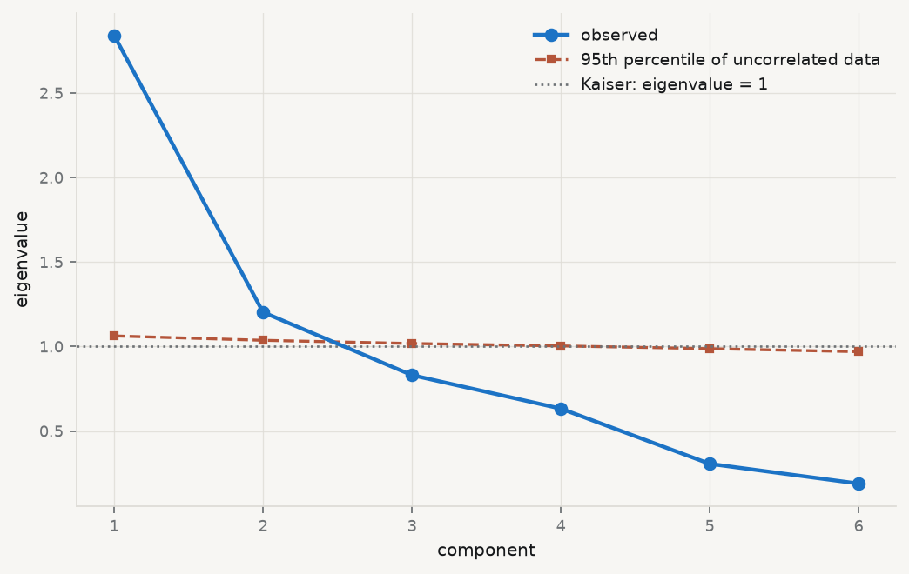
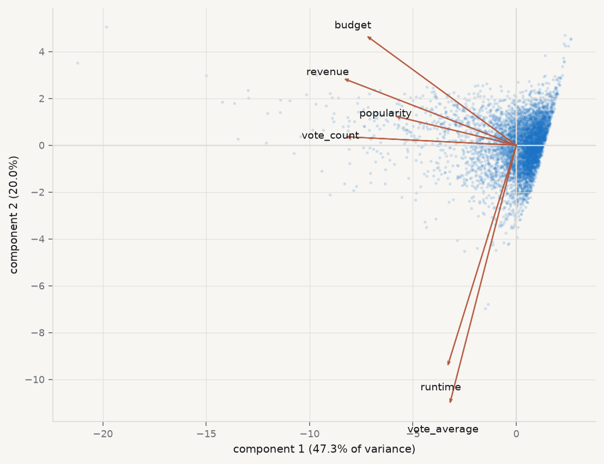

A dataset with six numeric columns does not necessarily measure six things. Budget, revenue, popularity, runtime, average rating and vote count are six columns describing a film; they are plainly not six independent facts about it, because expensive films earn more, popular films are voted on more, and almost everything correlates with almost everything. The question this chapter answers is how many distinct quantities are actually varying, and what they are.
Two methods answer it, they are routinely confused, and the confusion is not harmless. Principal component analysis is a rotation of the data: it finds new axes, ordered by how much variance they capture, with no model and no error term. Factor analysis posits unobserved causes and asks what would have to be true of them to produce the correlations you see. The first is a description; the second is a hypothesis.
Karl Pearson · 1857–1936
Principal components, 1901 — lines and planes of closest fit.
Elliott & Fry, undated. Public domain, via Wikimedia Commons.
From the archive · Pearson, 1901
Karl Pearson’s paper is called On lines and planes of closest fit to systems of points in space, and the title contains the whole idea (Pearson 1901). He asked what line best fits a cloud of points when there is no distinguished variable to predict — when \(x\) and \(y\) are on the same footing and the question is the shape of the cloud rather than the conditional mean of one coordinate given the other.
The answer differs from regression in a way worth seeing rather than being told. Least squares minimises vertical distances, because it treats \(y\) as the thing to be explained and \(x\) as given. Pearson’s line minimises perpendicular distances, because neither coordinate is privileged. They are different lines, and the difference grows as the correlation weakens.
Hotelling gave the method its modern algebra and its name three decades later, deriving the components as the eigenvectors of the covariance matrix and establishing that they successively capture maximal variance (Hotelling 1933).
Figure 7.1: Regression and the first principal component are not the same line. Least squares minimises the vertical distances (grey); Pearson’s line minimises the perpendicular ones (red). The regression line is always the flatter of the two.
7.2 Standardise, or the biggest units win
PCA maximises variance, and variance has units. A variable measured in hundreds of millions will have a variance many orders of magnitude larger than one measured from zero to ten, and the first component will therefore be, almost entirely, that variable. Nothing has been discovered; the units have been reported back.
Run it: PCA on raw units, and then on standardised ones
movies = qmib.load("movies").select_dtypes("number").dropna()# A data-quality problem first — see the section at the end of this chapter.usable = movies[(movies["budget"] >0) & (movies["revenue"] >0)& (movies["runtime"] >0)].copy()X = usable.to_numpy(float)cols =list(usable.columns)print(f"rows used: {len(usable):,} of {len(movies):,}")def eigen(A): ev, V = np.linalg.eigh(A)return ev[::-1], V[:, ::-1]Xc = X - X.mean(0)ev_raw, V_raw = eigen(np.cov(Xc, rowvar=False))print(f"\nRAW UNITS: first component captures {ev_raw[0]/ev_raw.sum():.2%} of variance")print(" its loadings:")for c, l insorted(zip(cols, V_raw[:, 0]), key=lambda t: -abs(t[1])):print(f" {c:14}{l:+8.4f}")Z = (X - X.mean(0)) / X.std(0, ddof=1)ev, V = eigen(np.corrcoef(Z, rowvar=False))print(f"\nSTANDARDISED: first component captures {ev[0]/ev.sum():.2%}")print(f" eigenvalues: {np.round(ev, 3)}")
rows used: 5,369 of 45,203
RAW UNITS: first component captures 97.50% of variance
its loadings:
revenue -0.9840
budget -0.1783
vote_count -0.0000
popularity -0.0000
runtime -0.0000
vote_average -0.0000
STANDARDISED: first component captures 47.32%
eigenvalues: [2.839 1.203 0.831 0.632 0.306 0.189]
Ninety-seven and a half per cent of the variance on one component, loading almost entirely on revenue, and it means nothing at all. Revenue is measured in dollars and runtime in minutes; the analysis has ranked the columns by the size of their units. Standardising each variable to unit variance removes the arbitrariness, and it changes the answer completely: the first component now captures under half the variance, and there is a second worth looking at.
Standardisation is therefore part of the method rather than a preliminary — the same conclusion chapter 5 reached about the penalties, for the same reason. The practical consequence is that PCA is almost always performed on the correlation matrix, which is the covariance matrix of standardised data.
7.3 How many components?
Eigenvalue — the variance of the data along a component. On standardised data the eigenvalues sum to the number of variables, so an eigenvalue of 1 corresponds to the variance of one original variable — a component that explains no more than a single column would have on its own.
That gives the oldest rule: keep components with eigenvalue above 1. It is a convention, not a test, and it is known to over-retain. Two better instruments exist, and they disagree usefully.
Cattell’s scree test looks for the elbow: plot the eigenvalues in order and retain those above the point where the curve flattens into rubble (Cattell 1966). It is subjective by construction, which is a fair criticism and not a fatal one — the judgement is at least visible.
Horn’s parallel analysis makes it empirical (Horn 1965). Generate data of the same shape with no correlation at all, compute its eigenvalues, and retain only components whose eigenvalue exceeds what pure noise of that size produces. It answers the right question — is this component larger than chance — and it is the method to use when you can.
Kaiser (>1): retain 2
parallel analysis: retain 2
cumulative variance of the first two: 67.4%

Figure 7.2: Choosing the number of components three ways. The Kaiser line at 1 retains two; the elbow suggests two; parallel analysis against uncorrelated data of the same shape retains the components lying above the dashed noise curve.
7.4 Loadings and scores are different objects
The single most common confusion in applied use, and it has consequences for what you are allowed to plot.
Loading — an element of the eigenvector: how much an original variable contributes to a component. There are as many loadings per component as there are variables, and they describe what the component means.
Score — the value of a component for an observation, computed as \(Z v_j\). There are as many scores per component as there are rows, and they are the new coordinates you would use in a subsequent regression.
Loadings interpret; scores are data. A biplot shows both at once and is therefore the standard display, but the two are on different scales and the relative lengths of the loading arrows are meaningful only against each other.
Show the code
scores = Z @ V[:, :2]fig, ax = plt.subplots(figsize=(7.0, 5.4))ax.scatter(scores[:, 0], scores[:, 1], s=6, color=CL.accent, alpha=0.18, edgecolor="none", zorder=1)scale = np.abs(scores).max() *0.72for j, name inenumerate(cols): ax.arrow(0, 0, V[j, 0] * scale, V[j, 1] * scale, color=CL.warn, width=0.004, head_width=0.10, alpha=0.9, zorder=3) ax.text(V[j, 0] * scale *1.12, V[j, 1] * scale *1.12, name, fontsize=8.5, color=CL.ink, ha="center", va="center", zorder=4)ax.axhline(0, color=CL.line, lw=1); ax.axvline(0, color=CL.line, lw=1)ax.set_xlabel(f"component 1 ({ev[0]/ev.sum():.1%} of variance)")ax.set_ylabel(f"component 2 ({ev[1]/ev.sum():.1%})")fig.tight_layout()print("loadings on the first two components:")print(f"{'variable':14}{'PC1':>9}{'PC2':>9}")for j, name inenumerate(cols):print(f"{name:14}{V[j,0]:+9.3f}{V[j,1]:+9.3f}")
loadings on the first two components:
variable PC1 PC2
budget -0.462 +0.298
popularity -0.370 +0.078
revenue -0.533 +0.182
runtime -0.213 -0.605
vote_average -0.207 -0.710
vote_count -0.526 +0.023

Figure 7.3: The first two components. Points are scores — one per film. Arrows are loadings — one per variable. The first component orders films by overall scale and reach; the second separates long, well-rated films from expensive, widely-voted ones.
7.5 PCA is not factor analysis
The two are distinguished by what they do with the variance that a variable does not share with the others.
PCA decomposes all the variance. Every component is a weighted sum of the observed variables, so the components are defined whatever the correlations are — even if there are none, PCA returns six components for six variables and simply reports eigenvalues near 1. It is a rotation, and rotations are always available.
Factor analysis splits the variance in two. Each observed variable is modelled as a combination of a few common factors plus something specific to itself:
\[
x \;=\; \Lambda f + u,
\qquad
\operatorname{Var}(x) \;=\; \underbrace{\Lambda \Lambda^\top}_{\text{common}} + \underbrace{\Psi}_{\text{unique}},
\]
with \(\Psi\) diagonal. The model asserts that the correlations between variables are produced entirely by the common factors, and that whatever is left is particular to each variable. That is a testable claim: a set of correlations may be incompatible with any small number of factors.
Communality — the share of a variable’s variance explained by the common factors, \(\sum_j \lambda_{ij}^2\). Its complement is the uniqueness. A variable with low communality does not belong to the factor structure and is telling you so.
The practical difference: use PCA when the goal is to compress many correlated columns into a few for prediction or display, and factor analysis when you believe in a latent quantity and want to estimate it. Spearman’s original argument for a general factor of intelligence is the founding example of the second (Spearman 1904), and the tradition of using PCA where the question was really factor-analytic is long and mostly unhelpful (Fabrigar et al. 1999).
7.6 A factor is identified only up to rotation
This is the deepest fact in the chapter and the one most often glossed.
If \(\Lambda\) reproduces the correlations, so does \(\Lambda R\) for any orthogonal matrix \(R\), because
The model fits exactly as well. Every communality is unchanged. Nothing observable distinguishes them — and yet the loadings, which is to say the interpretation, can be completely different. There is no statistical basis for preferring one rotation; the choice is made on grounds of interpretability, and rotation criteria such as varimax formalise a preference for loadings that are large or near zero rather than middling (Kaiser 1958).
Run it: rotate the solution and watch the fit not change
from sklearn.decomposition import FactorAnalysisfrom sklearn.preprocessing import StandardScaler# The car-attribute battery: fourteen rated features, ninety respondents.cars = qmib.load("efa").select_dtypes("number").dropna()Zc = StandardScaler().fit_transform(cars)fa = FactorAnalysis(n_components=3, random_state=0).fit(Zc)L = fa.components_.Tdef varimax(L, tol=1e-6, iters=200):"""Kaiser's criterion, by the standard SVD iteration.""" p, k = L.shape R, d = np.eye(k), 0.0for _ inrange(iters): d_old, Lam = d, L @ R B = L.T @ (Lam**3- Lam @ np.diag(np.diag(Lam.T @ Lam)) / p) u, s, vt = np.linalg.svd(B) R, d = u @ vt, s.sum()if d_old and d / d_old <1+ tol:breakreturn L @ R, RLr, R = varimax(L)print(f"n = {len(cars)}, variables = {cars.shape[1]}, factors = 3\n")print(f"{'':22}{'unrotated':>14}{'varimax':>14}")print(f"{'||Lambda Lambda^T||':22}{np.linalg.norm(L @ L.T):14.8f}"f"{np.linalg.norm(Lr @ Lr.T):14.8f}")print(f"{'sum of communalities':22}{(L**2).sum():14.8f}{(Lr**2).sum():14.8f}")print(f"\nR is orthogonal: ||R'R - I|| = {np.linalg.norm(R.T @ R - np.eye(3)):.2e}")print("\nIdentical fit. Now the interpretation:")tab = pd.DataFrame(Lr, index=cars.columns)for c in tab.columns:print(f" factor {c+1}: {', '.join(tab[c].abs().nlargest(3).index)}")
n = 90, variables = 14, factors = 3
unrotated varimax
||Lambda Lambda^T|| 2.79837923 2.79837923
sum of communalities 4.56171180 4.56171180
R is orthogonal: ||R'R - I|| = 3.96e-16
Identical fit. Now the interpretation:
factor 1: space_comfort, fuel_type, after_sales_service
factor 2: resale_value, maintenance, fuel_efficiency
factor 3: testimonials, color, fuel_efficiency
Two solutions, the same fit to eight decimal places, and different stories. If a paper reports rotated loadings without naming the rotation, it has not reported its result.
7.7 What you may not call the components
A component is a weighted sum of variables that happens to capture variance. It is not a thing, it has no units, and its sign is arbitrary — multiply an eigenvector by \(-1\) and it is still an eigenvector, so “high on component 1” can be reversed by a convention in the software.
The temptation is to name it anyway. The first component above loads positively on budget, revenue, votes and popularity, so it is tempting to call it commercial success and then to treat that name as a measurement. Three things are wrong with doing so.
The name is an interpretation, not a finding. It is your reading of a loading pattern, and a different reader may propose a different name that fits the same numbers.
Naming invites reification. Once “commercial success” has a column, it gets used in regressions, and its coefficient gets discussed as though the quantity existed independently of the six columns it was built from.
The component is sample-specific. Add films, drop a variable, or restrict to one decade, and the loadings move. A named factor should be stable across reasonable perturbations, and that is checkable — refit on resamples and look.
The disciplined form is to say what the component is: “the first principal component, which loads positively on all six variables and most strongly on revenue and vote count, and accounts for 47% of the standardised variance”. That sentence is defensible. “A film’s commercial success” is a claim about the world.
7.8 The zeros, which are not zeros
One data-quality note, because it changes every number in this chapter and it is invisible in a correlation matrix.
Run it: count the zeros
print(f"{'variable':14}{'zeros':>10}{'share':>9}")for c in movies.columns: z =int((movies[c] ==0).sum())print(f"{c:14}{z:>10,}{z/len(movies):>9.1%}")print(f"\nrows with budget, revenue and runtime all positive: "f"{len(usable):,} of {len(movies):,} ({len(usable)/len(movies):.1%})")
variable zeros share
budget 36,323 80.4%
popularity 60 0.1%
revenue 37,801 83.6%
runtime 1,558 3.4%
vote_average 2,899 6.4%
vote_count 2,800 6.2%
rows with budget, revenue and runtime all positive: 5,369 of 45,203 (11.9%)
Four out of five films in this dataset have a budget of exactly zero, and five out of six have revenue of exactly zero. No film costs nothing. These are missing values recorded as the number 0 — which arithmetic cannot distinguish from a measurement, so every mean, every correlation and every eigenvalue computed on the full table is contaminated.
This is chapter 2’s missingness section arriving with consequences. The correlation matrix on the full data is not a weaker version of the truth; it is a description of a mixture of films and non-observations. Dropping to the 5,369 complete rows is the minimum defensible response, and it is not neutral either: films with recorded budgets are larger, better documented and more recent, so the analysis now describes that subset. Say so.
7.9 A short review of the literature
Pearson (1901) posed the problem geometrically — the best-fitting line and plane to a cloud of points, minimising perpendicular rather than vertical distance — and Hotelling (1933) supplied the eigen-decomposition and the name. The two papers are worth reading in sequence for how differently the same method looks from a geometric and an algebraic starting point.
Factor analysis has a separate origin in Spearman (1904), whose argument for a general factor from correlations among school subjects established the model of observed variables as combinations of unobserved ones. The distinction from PCA was blurred almost immediately, and Fabrigar et al. (1999) documents how routinely PCA is reported where the research question was factor-analytic, along with the consequences.
On how many to retain, Cattell (1966) introduced the scree test, whose subjectivity is its standard criticism and its visible honesty; Horn (1965) replaced the judgement with a comparison against uncorrelated data of the same dimensions, which is the method used above and still the best available.
Kaiser (1958) gave rotation its dominant criterion. The underlying indeterminacy — that loadings are identified only up to an orthogonal transformation — is not a defect of any method but a property of the model, and it means that the interpretive step is a choice the analyst makes and must disclose.
7.10 What to report
That the inputs were standardised, and on what matrix the decomposition was performed. Without it the result is a ranking of measurement units.
The full eigenvalue spectrum, not only the retained ones, and the cumulative variance.
How many components you kept and by what rule — with parallel analysis if you can, and the scree plot either way so the reader can disagree.
Loadings, with the rotation named. Unrotated, varimax, oblimin: they fit identically and mean different things.
Communalities, if the model is factor analysis. A variable the factors do not explain should be discussed, not silently retained.
The description rather than the name. What the component loads on, and how much variance it carries. If you must give it a label, mark it as a label.
What the components are not. They are not measurements, they have arbitrary sign, they are specific to this sample and these variables, and a regression using them as predictors inherits all of that.
Fabrigar, Leandre R., Duane T. Wegener, Robert C. MacCallum, and Erin J. Strahan. 1999. “Evaluating the Use of Exploratory Factor Analysis in Psychological Research.”PsychologicalMethods 4 (3): 272–99. https://doi.org/10.1037/1082-989X.4.3.272.
Horn, John L. 1965. “A Rationale and Test for the Number of Factors in FactorAnalysis.”Psychometrika 30 (2): 179–85. https://doi.org/10.1007/BF02289447.
Hotelling, H. 1933. “Analysis of a Complex of Statistical Variables into Principal Components.”Journal of EducationalPsychology 24 (6): 417–41. https://doi.org/10.1037/h0071325.
Kaiser, Henry F. 1958. “TheVarimaxCriterion for AnalyticRotation in FactorAnalysis.”Psychometrika 23 (3): 187–200. https://doi.org/10.1007/BF02289233.
Pearson, Karl. 1901. “LIII. <I>On Lines and Planes of Closest Fit to Systems of Points in Space</i>.”TheLondon, Edinburgh, and DublinPhilosophicalMagazine and Journal of Science 2 (11): 559–72. https://doi.org/10.1080/14786440109462720.
Spearman, C. 1904. “"GeneralIntelligence," ObjectivelyDetermined and Measured.”TheAmericanJournal of Psychology 15 (2): 201. https://doi.org/10.2307/1412107.